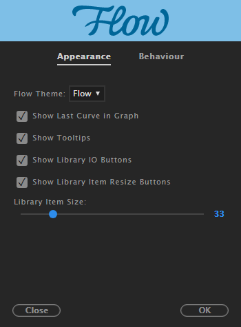
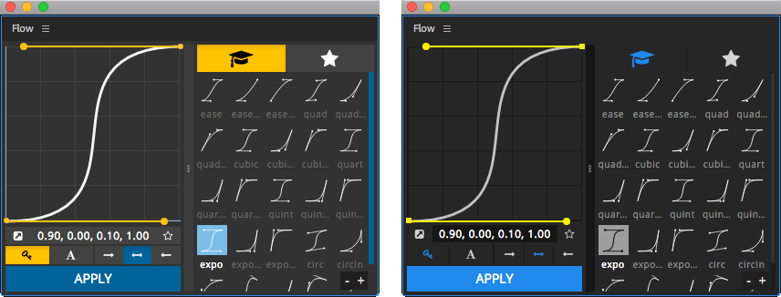
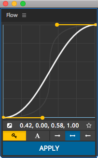

Appearance

Flow Theme
Use this to change Flow colour theme!
| Flow |
Flow’s native theme |
| AE |
AE-based theme; adapts to AE brightness! |

Show Last Curve in Graph
When enabled the graph editor displays previously used curve.

Library Item Size
Changes the thumbnail size in the library.
Range between 20 to 50 pixels.